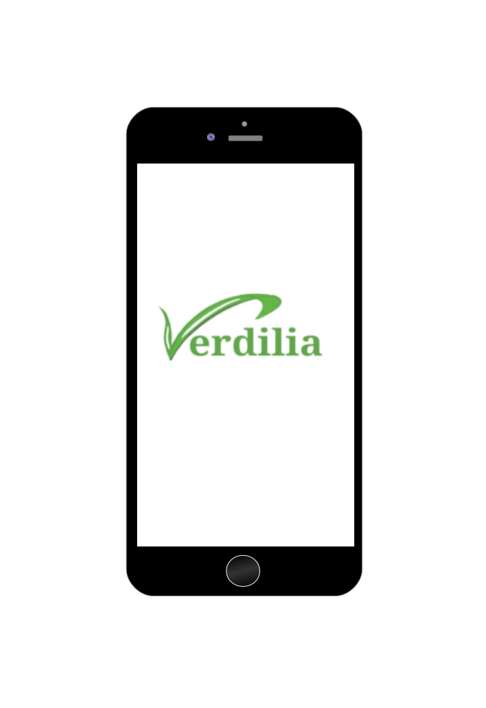
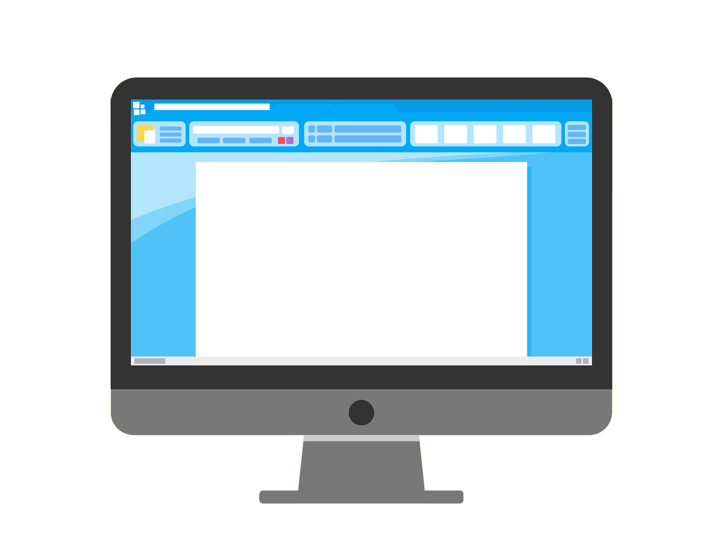
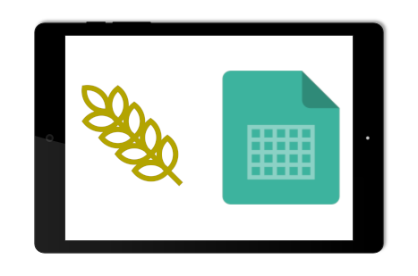
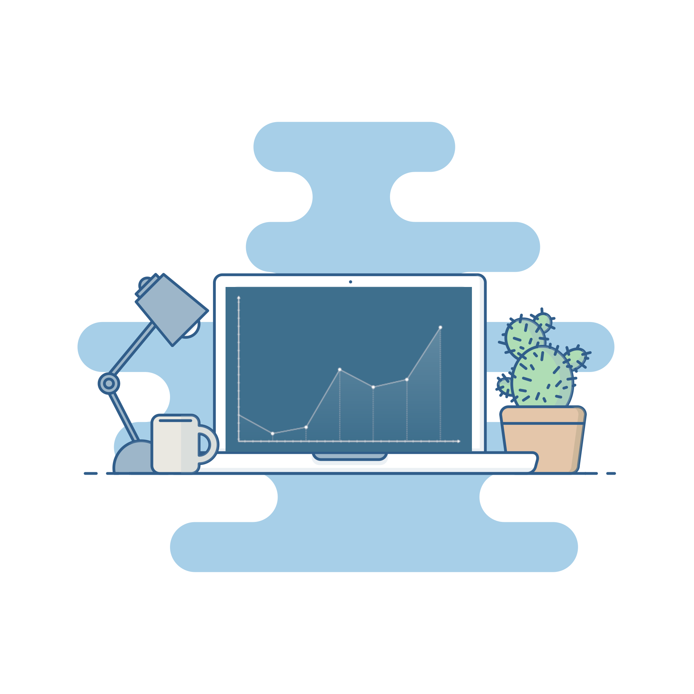

Home
Servizi
Chi siamo
Contatti

VERDILIA

Tieni traccia di tutti gli interventi sui tuoi terreni grazie al
Quaderno di Campagna Digitale
, comodamente da computer, smartphone e tablet.
Analisi
Coltivazioni per terreno
Arature
Semine
Fertilizzanti
Concimi
Irrigazioni
Attrezzature utilizzate
Date di inizio e fine interventi
Trattamenti fitosanitari
Resa
Meteo
Registrazioni normative
Commenti

Utilizza il nostro
Matcher
per sapere la
coltura migliore
per il tuo terreno sulla base di macronutrienti, micronutrienti, condizioni ambientali e tanto altro.
Realizza piani di
fertilizzazione
,
fertirrigazione
o
concimazione
personalizzati per il tuo appezzamento e fai rendere al meglio la tua coltivazione.
Trova il
mercato
migliore dove vendere i tuoi prodotti con un click.

Scopri i possibili rischi per la tua
coltivazione
e come questi impattano sulla
resa
e sul tuo
portafoglio
. Prendi contromisure adeguate per tempo.
Ludovica Mirto
Laureanda magistrale in Management Aziendale, con specializzazione su Sostenibilità e Digital.
Alessandro De Simeis
Laureando in Scienze Biologiche all'Unisalento.
Lorenzo Gallo
Laureando in Ingegneria dell'Informazione, è specializzato nello sviluppo di applicazioni complesse, in ambito web, desktop e mobile.
Number: 3662058284
Email: info@verdilia.com